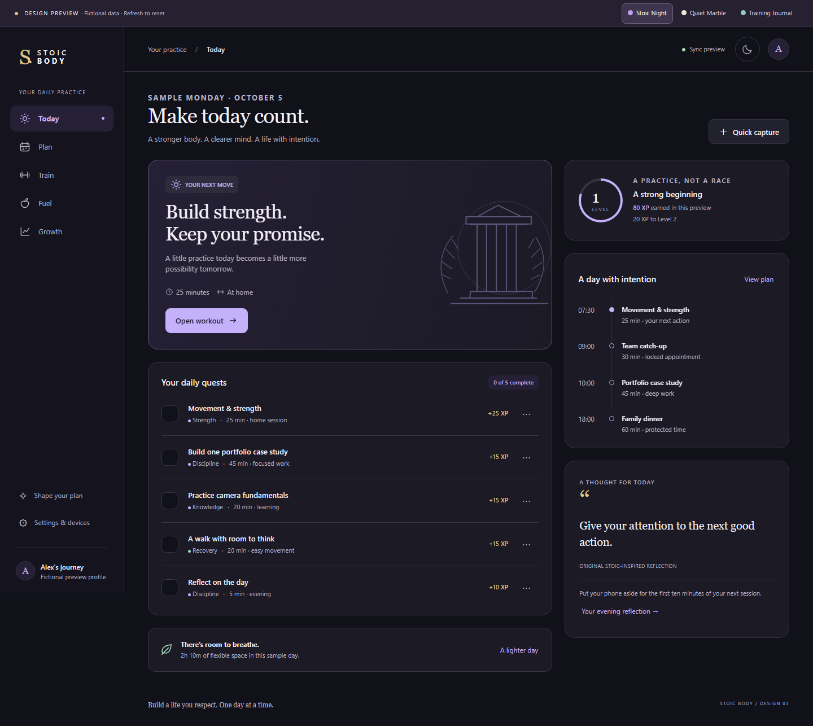
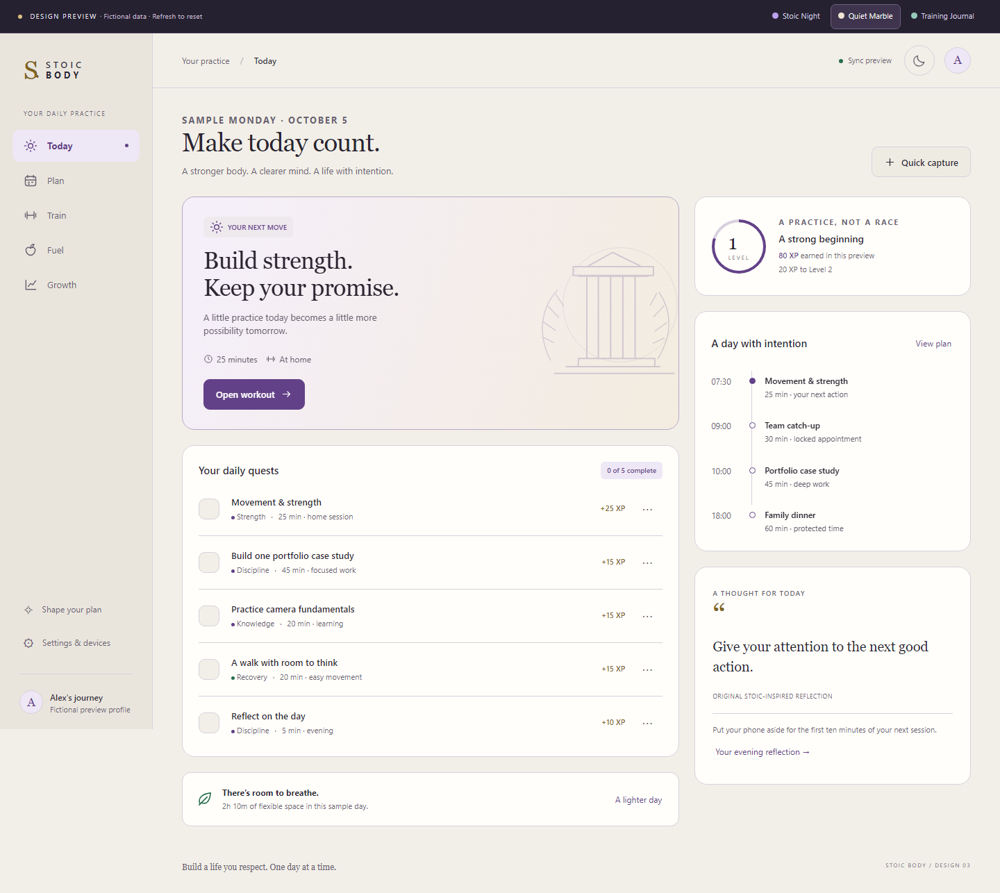
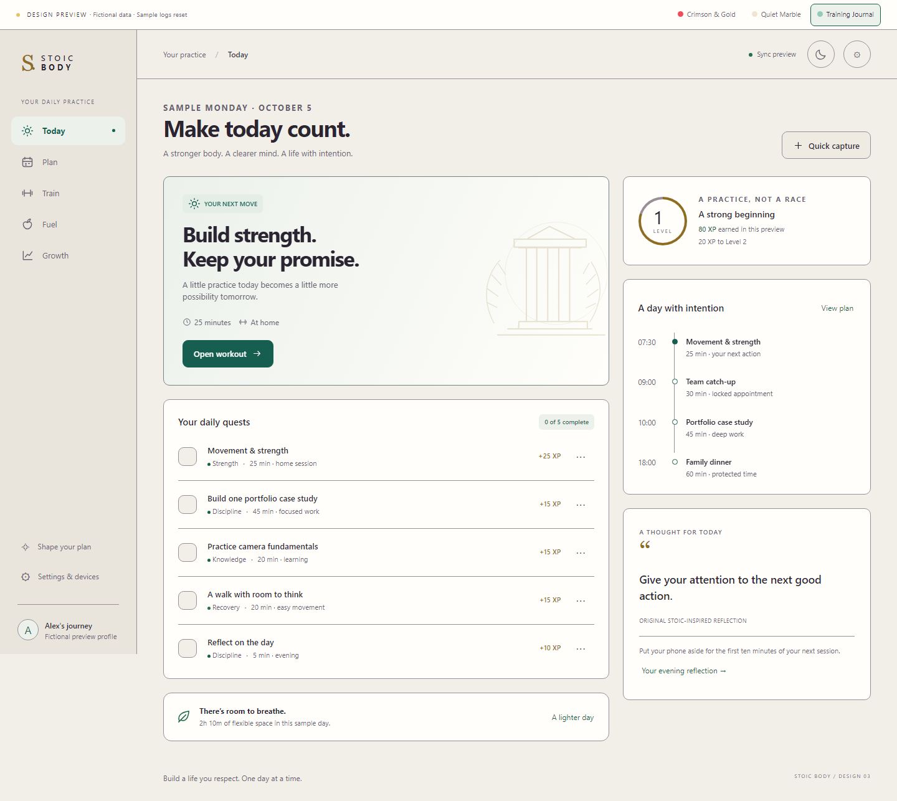

01 / RECOMMENDED STARTING POINT
Stoic Night
Quiet confidence. Charcoal, purple and gold with a subtle classical character.
Explore Stoic NightSTOIC BODY / PHASE 03
Explore the same daily journey in three visual directions. Switch styles inside the preview at any time. Start with Today, then try training and a weekly review.

Quiet confidence. Charcoal, purple and gold with a subtle classical character.
Explore Stoic Night
A softer daily ritual. Warm paper, deep plum and generous breathing room.
Explore Quiet Marble
A more athletic rhythm. Slate, green and straightforward, compact details.
Explore Training Journal1 / Take a small actionComplete a daily quest, see its XP and undo it.
2 / Make the plan yoursPreview a schedule change before accepting it.
3 / Try the detailsLog a sample set or meal, explore diet cards and review an academic import.
4 / Notice the experienceCompare phone-sized layouts, calm mode and your evening reflection.